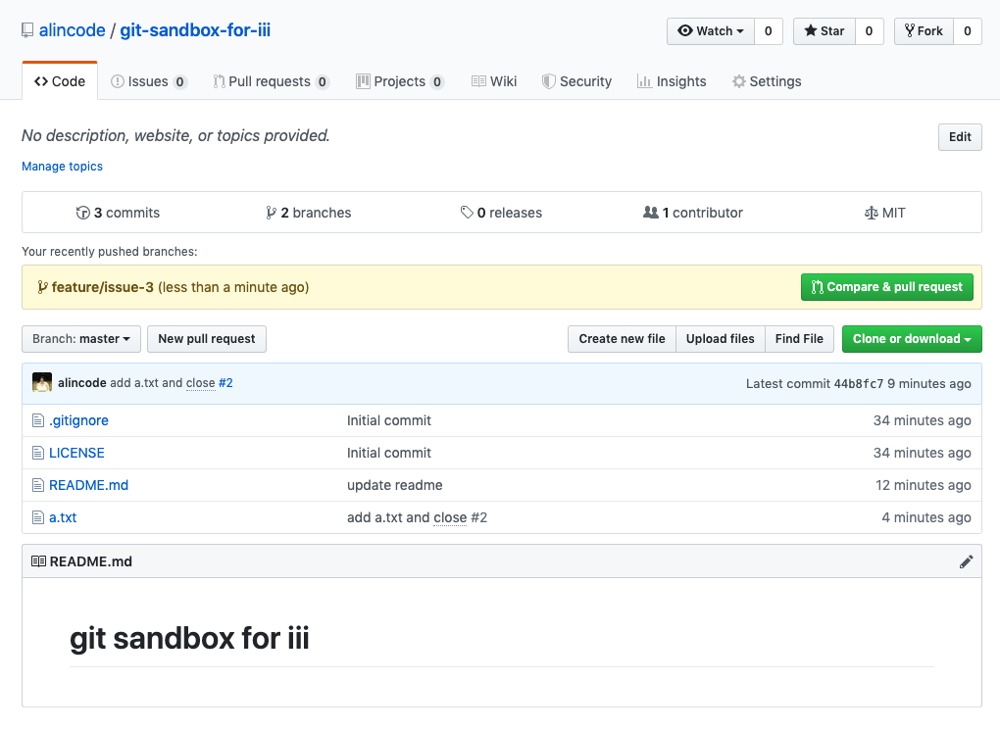
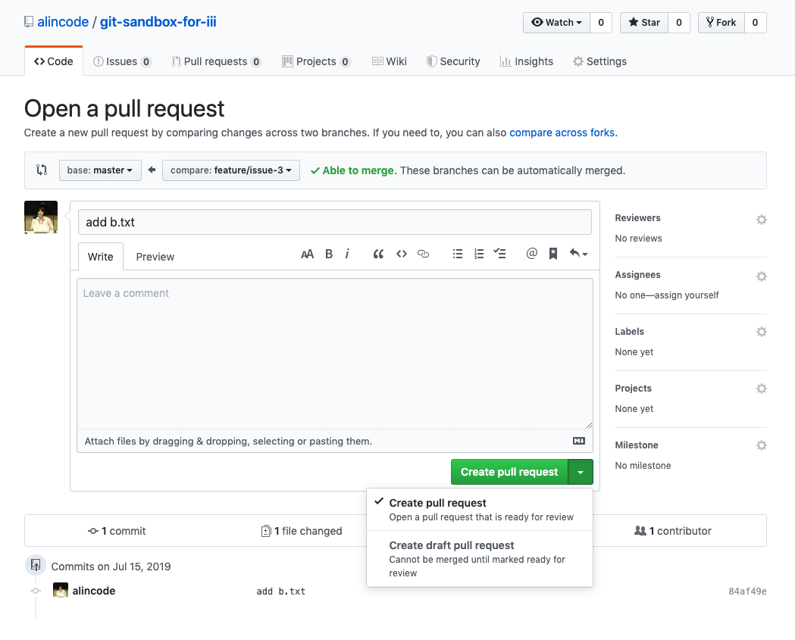
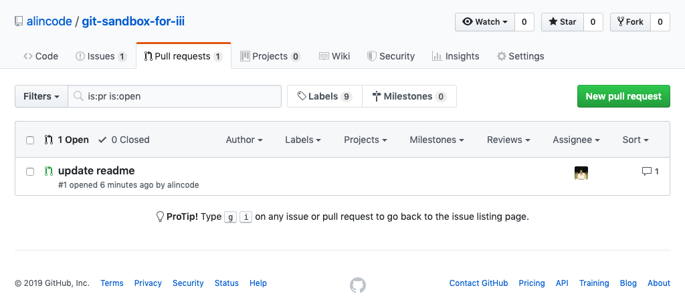
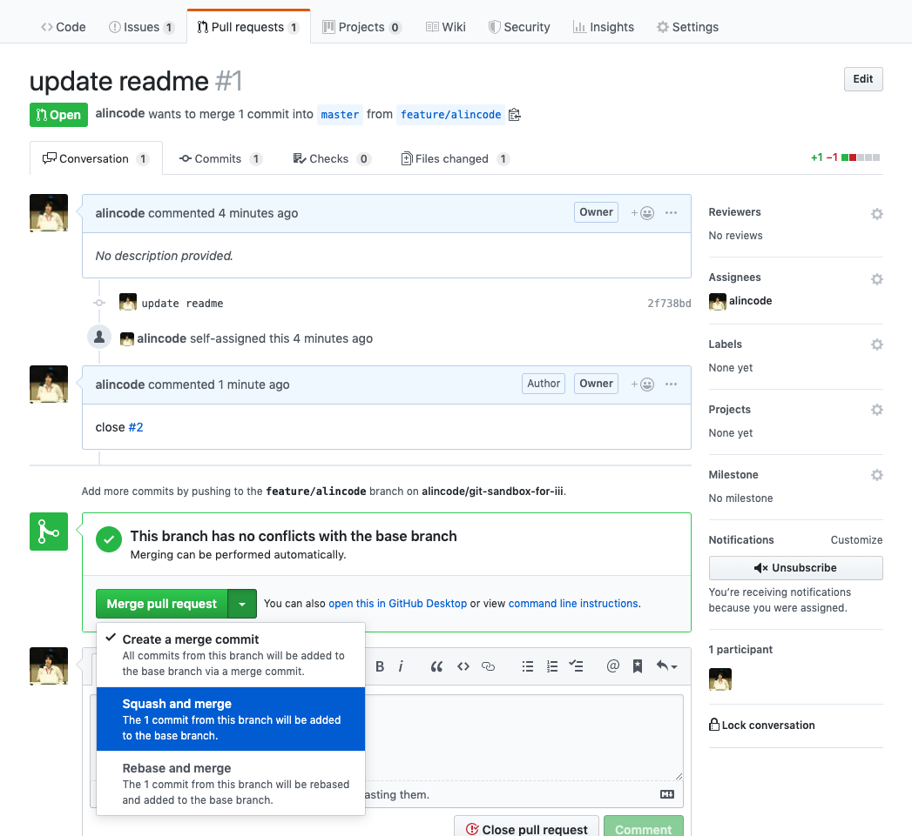

Github Pull Request
PR 的全名是 Pull Request，它是一種通知機制，它可讓您在 GitHub 上向他人告知你已經將修改 push 到儲存庫中了，請求協作者對你的送交內容進行審查，希望他合併你的修改，這就是 Pull Request。
向 Github 託管的某一項目中的某一分支提出合併請求。項目管理者則可以在 github 的 web 界面上合併來自不同分支的代碼，解決合併衝突，做代碼審查或對代碼進行評論。
新增一個 PR
步驟：按一下「右方」綠色的 compare & pull request 的按鈕

步驟：按一下「下方」綠色的 create pull request 按鈕，接著你應該可以看到 PR 成功的訊息。或者你也可以從上方的 Pull requests 頁籤查看剛剛的那筆 PR 是否存在。

不知道你有沒有注意到 create pull request 按鈕旁還有一個下拉選單，按下去之後可以看到 create draft pull request 的選項。如果你你想發出一個 PR 讓協作者審查，但更動的部分其實還沒有完成，這種 PR 可以避免對方不小心按了 merge 的按鈕。
注意
發 PR 不代表一定要使用 Fork 功能，會用 Fork 功能主要是因為你沒有在那個原生 repo 沒有送交的權限，所以你可以 Fork repo 回來後，你才會有足夠的權限可以發布送交紀錄到遠端 repo。
查看 PR

合併 PR

練習題
情境：發一個 Pull Rquest (PR)
git checkout master
git branch feature-3
git checkout feature-3
git add .
git commit -m 'implement feature 3'
git push -u origin feature-3
接著就可以遵循前面提到的 新增一個 PR 的圖一跟圖二的步驟。
情境：進行代碼審查 Code Review
- 前往
Pull requests頁籤查看所有的 PR 列表 - 選擇你要查看的 PR，然後點進去看更多的資訊
- 檢視程式碼變更紀錄，針對有疑問的修正紀錄提出問題或建議修改方向。